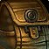

با حملههای Aqir هر هفته، Renown فرکشنهای Midnight را سریع بالا ببرید
برای جبران عقبافتادگی اعتبار فرکشنهای Midnight، حملههای Aqir سادهترین راهاند؛ رویدادی ساعتی که با دو توکن هفتگی، اعتبار سنگینی به دست میدهد.
حملههای Aqir یکی از فعالیتهای تازهٔ پچ 12.1.5 در Midnight است؛ رویدادی که هر ساعت، سرِ ساعت شروع میشود و مرحلهٔ نخست آن ۱۰ دقیقه طول میکشد. در این بازه، بازیکنها درون زون پرواز میکنند و هدفهای علامتگذاریشده را در نقطهٔ مشخصشده کامل میکنند.
باس هر ساعت و توکن هفتگی
پس از پایان همین ۱۰ دقیقه است که یک Aqir Monstrosity ظاهر میشود و بازیکنها زمان محدودی برای از پا درآوردنش دارند. نکتهٔ مهم برای شکارچیان اعتبار همینجاست: در هر هفته، دوبار نخست که این باس را شکست دهید، یک 
فقط دو شکست هفتگی نخست توکن میدهد؛ بعد از آن بههمینرویداد برگردید و وقت تلف نکنید.
مبادلهٔ توکن در Silvermoon City
این توکن نزد فروشندههای Aqir Vendors در Silvermoon City مبادله میشود؛ دقیقاً در مختصات /way #2393 39.4 80.4. با صحبت با Matildeux Osril انتخاب میکنید که اعتبار به کدام فرکشن تعلق بگیرد.
| فرکشن | اعتبار به ازای هر توکن |
|---|---|
| Silvermoon Court | 2,500 |
| Amani Tribe | 2,500 |
| Hara'ti | 2,500 |
| Singularity | 2,500 |
| Zul'jarra's Forces | 1,250 |
| آیلول: | 1 |
|---|---|
| اسلات: | مصرفی · consumable |
| سطح لازم: | 90 |
کاشته هفتگی شامل یک قطعه از تجهیزات Champion، مواد برای ارتقاء تجهیزات، طلا، قطعات کلید cofher، و بیشتر.
چون رویداد هر ساعت تکرار میشود، بهتر است دو شکست هفتگی را در برنامهتان بگنجانید تا پیشرفت Renown فرکشنهای Midnight بدون وقفه ادامه پیدا کند.